这是我配好环境使用hexo写的第一篇博客
这里特别感谢各位大佬们的支持与帮助ε≡٩(๑>₃<)۶
配置相关环境
要想创建自己的hexo博客需要配置相关的环境（我前几次就经常把环境搞炸），接下来开始配置创建博客所必须的环境
过程来源: Gaein nidb，Code Sheep.
相关视频链接: https://www.bilibili.com/video/BV1Yb411a7ty?from=search&seid=4666682153927695444
安装Node.js
可以去https://www.nodejs.org 网址下载
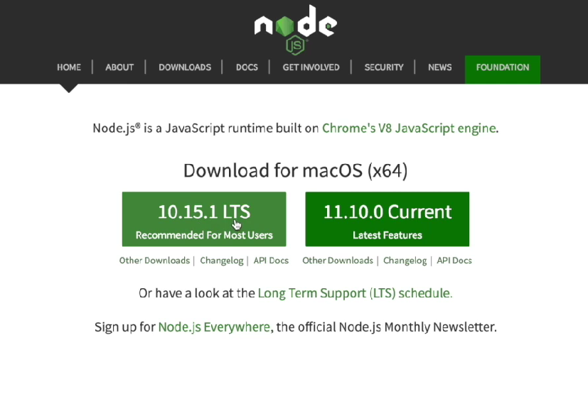
选择左边LTS(长期支持版)下载，安装时无脑下一步即可
安装完成之后会有两个组件，如图所示
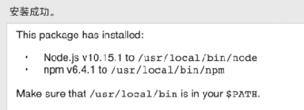
可以顺带检查一下它们俩的版本，按下键盘的win + R键，在弹出面板输入cmd，打开dos命令窗口。
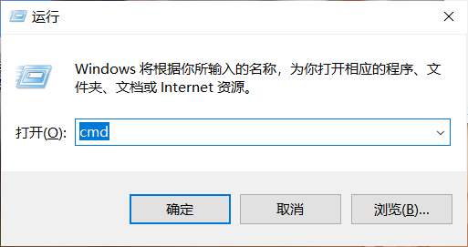
输入 npm -v 和 code -v
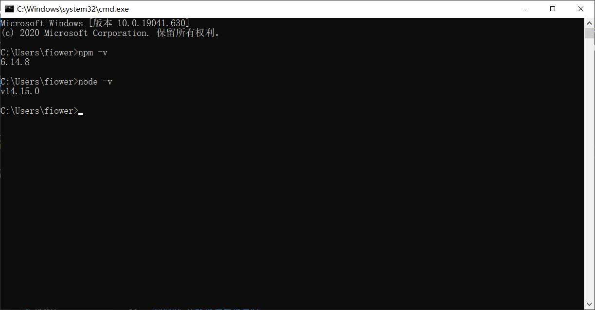
我们需要利用npm安装镜像包，但是因为国内的下载速度比较慢，所以我们需要下载一个cnpm淘宝的源
在dos命令窗口中输入npm install -g cnpm –registry=https://registry.npm.taobao.org
如果安装成功，可以在dos命令窗口输入cnpm检查一下

然后使用cnpm安装hexo框架
在dos命令窗口输入cnpm install -g hexo-cli
如果安装成功，可以在dos命令窗口输入hexo -v检查一下

那么你的环境已经配置好了，我们来正式搭建hexo博客
在本地创建hexo的博客
首先我们需要一个存放你博客的文件夹，所以第一步我们需要新建一个文件夹。
举个栗子:C:\Users\fiower\Documents\blog这是我的文件夹路径
我们终于可以创建自己的博客了(๑╹◡╹)ﾉ”””
由于本人没有用过powershell（菜），所以接下来我们使用dos命令窗口(git bash）创建本地博客
只需要两种方法选一即可(这里以dos命令窗口为例，git bash和dos命令窗口的指令是完全一样的，搭建时没必要纠结使用哪个)
使用dos命令窗口
按下键盘的win + R键，在弹出面板输入cmd，打开dos命令窗口。
这时路径默认是C:\Users\你的用户名字>
输入cd 你的博客所在路径 转入你的博客路径
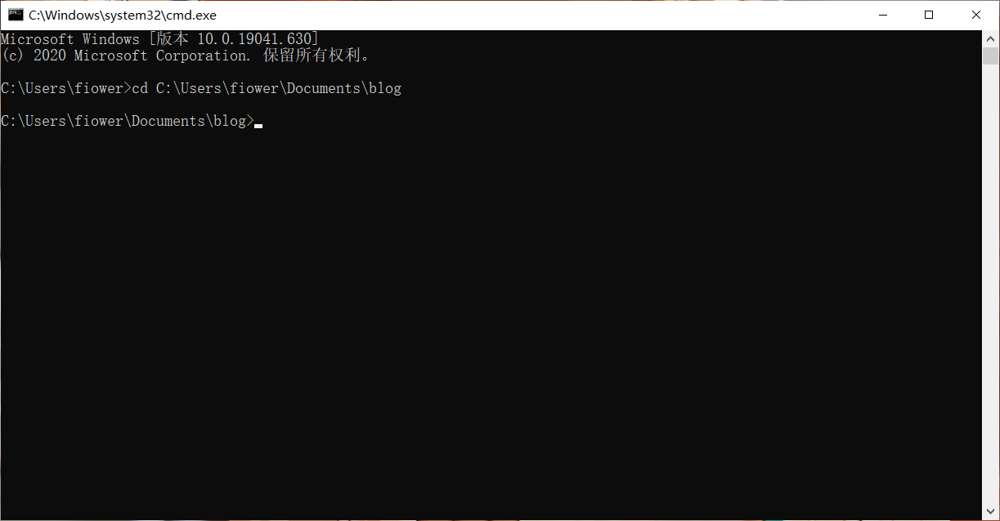
使用git bash
在你的博客文件夹下按下右键，点击git bash
开始创建本地博客
输入hexo init并按下回车等待
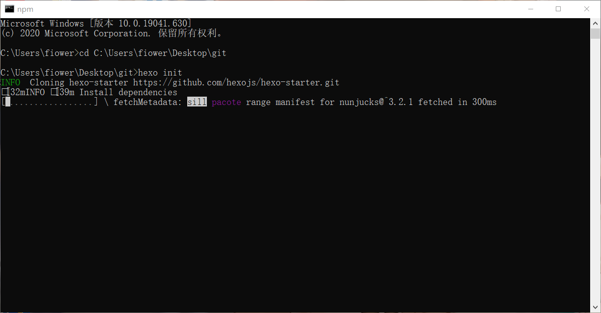
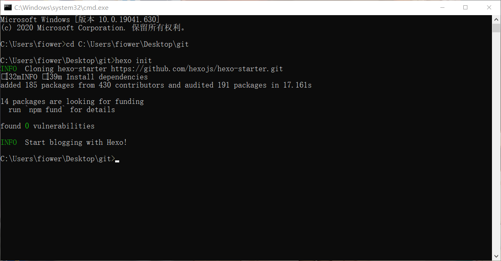
这时你的目标文件夹就会多出一些文件

那么恭喜你，现在hexo博客已经配置完毕了（bushi
继续在dos命令窗口输入hexo s并按下回车等待

如图所示，这时候出现了一个4000端口的网址
让我们在浏览器内打开这个网址

我们的第一个本地博客就搭建好了
但是你的程序还在运行着，这时候需要在dos窗口/git bash窗口中按下Ctrl + C键即可中断本地网址的建立（hexo s以后会用于博客写入新东西时的调试工作）
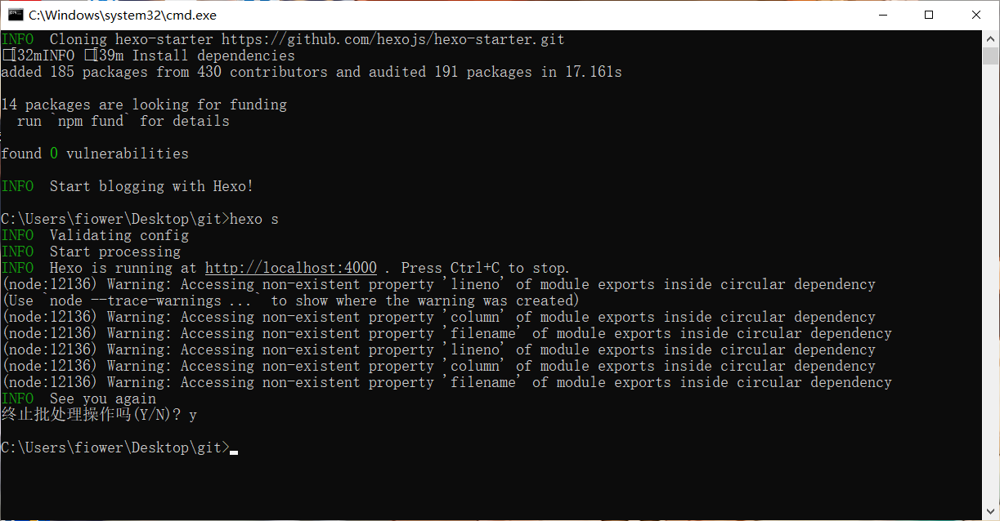
如果你没有成功到达这一步，不用害怕，只需要把你创建的文件夹干掉重来即可，多试试几次总会成功的
将hexo博客同步到远端(Github)
我相信你已经非常兴奋而且想要把你的博客让朋友们看到，别急，现在我们就把自己的博客部署到远端
接下来我们要把自己的博客部署到Github上(毫无疑问需要你的账号，没有的小伙伴需注册)
新建一个仓库
注意，用户部署个人博客的Github仓库的命名必须符合特定要求
必须是”你的Github的昵称.github.io”
建立了空仓库之后，我们需要装一个插件
在命令行中输入npm install –save hexo-deployer-git
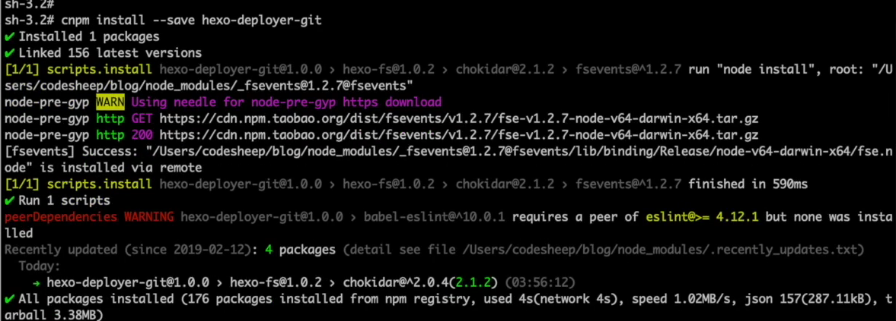
然后用vscode打开你的blog的根目录_config.yml文件(没有安装vscode的话也可以选择记事本打开)
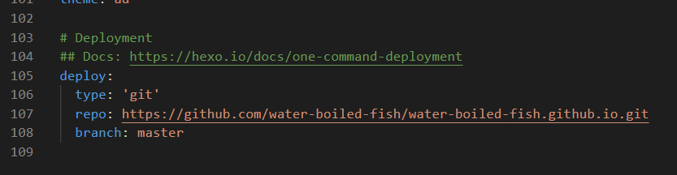
由于我没有新建空仓库，放一张CodeSheep的图片(这样获取你部署到远端的网址)
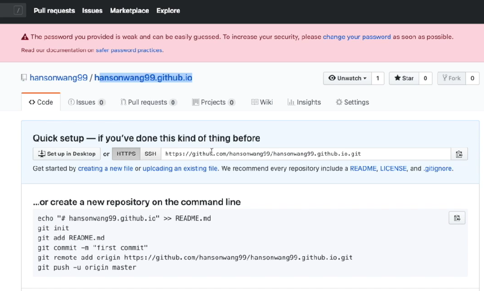
然后在dos命令窗口输入hexo d
这样你的hexo博客就部署到了远端(所有人都可以用这个网址访问你的博客了)
美化自己的hexo博客
首先你需要下载一个博客的主题(如果你认为你的博客默认主题已经非常好看的了请忽略我说的话)
我们以ad主题为例
你需要先找见ad主题在github的网址，以便把这个主题克隆到自己的文件夹里面
ad主题地址:https://github.com/dongyuanxin/theme-ad
然后我们需要在命令行中输入git clone https://github.com/dongyuanxin/theme-ad.git themes/ad
这样就能把ad的主题文件克隆到你的themes文件夹里面了

用vscode打开你的blog的根目录_config.yml文件，修改themes: landscape为themes: ad
然后保存退出
在命令行输入hexo s进行调试，打开4000端口
(因为我没图片了就找我现在的充个数ヾ(ｏ･ω･)ﾉ)
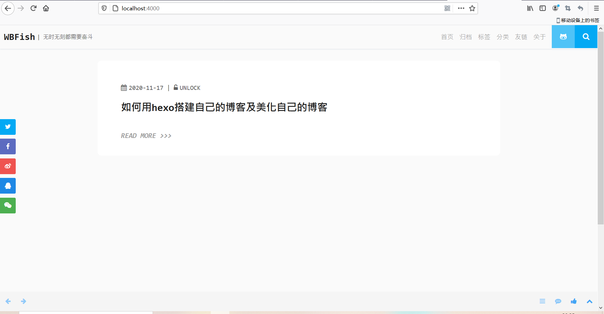
然后输入hexo clean清楚临时缓存的文件，输入hexo d部署到远端
这样我们的主题就修改好了
如何修改博客上的一些内容
这里的内容指的是超链接，修改博客文字内容等操作，可以使你的博客更加个性化(也许(っ•̀ω•́)っ✎⁾⁾)
相信你已经发现了，blog的根目录_config.yml文件很重要，打开发现有很多设置的东西
其实你themes目录下的主题也有_config.yml文件，只要你打开它，我相信你就会知道怎么使用它了(确信)
加入超链接我还没学会，学会之后会把我的经验分享出来，所以本节未完待续(>ω･* )ﾉ
如何写文章及在写文章时加入图片
我们只需在命令行输入hexo new “文章标题”就可以创建一个空文件夹了，然后可以打开改.md文件进行写入内容
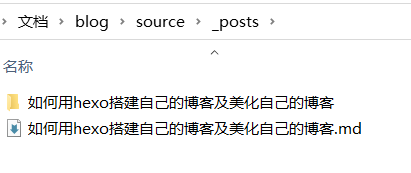
那么问题来了，如何才能写出像我一样带有图片的文章呢？
我们需要再下载一个插件
我们需要打开git bash(dos也可以)输入 npm install hexo-asset-image –save
然后打开hexo的配置文件_config.yml
找到 post_asset_folder，把这个选项从false改成true
这样我们每次新建的文章都会带有一个同名的文件夹(原来的文件可以直接新建同名文件夹食用)
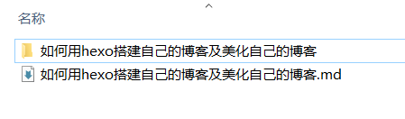
由于hexo文章是基于markdown语法写的，我们需要如何用markdown语法插入图片
参考网址:https://www.runoob.com/markdown/md-tutorial.html
格式:
比如我这篇文章就是这样写的:

这样就可以在文章中间加入图片了qwq


评论加载中